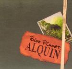

| Artist: | Alquin |
| Title: | Blue Planet |
| Label: | Hunter Music 771617-2 |
| Length(s): | 65 minutes |
| Year(s) of release: | 2005 |
| Month of review: | [03/2006] |
| 1) | Return To The Blue Planet | 6.01 |
| 2) | Murder In The Park | 4.43 |
| 3) | Over & Out | 5.53 |
| 4) | The Hitman | 3.21 |
| 5) | Falling | 4.39 |
| 6) | Love = A Little Thing | 2.10 |
| 7) | Terror Eyes | 6.18 |
| 8) | 2 Days 2 Nights | 3.48 |
| 9) | Pictures | 4.14 |
| 10) | Can't Sleep | 3.08 |
| 11) | Enough = Enough | 3.43 |
| 12) | Singapore Connection | 5.09 |
| 13) | Cherise | 5.43 |
| 14) | The Beach | 5.54 |
This mingling of styles and influences has always made for albums with enough variation. The same goes for this album. There are your basic poprock tracks, such as Over & Out and 2 Days 2 Nights, the sort of Alquin tracks I've never cared much for. But: the warm sounding organ (with lesley, not something you hear very often nowadays) in the former does soften the plain effect, as does the lingering guitar in the middle. The Hitman is a track with a ballad like atmosphere, with lingering sax and guitars, an atmosphere repeated in The Beach, arguably the best tracks of this album. Murder In The Park fits in this category too, albeit it a little less strikingly so. Love = A Little Thing is a deer short ballad. Terror Eyes opens mostly rocky, but slowly develops more feel and warmth, with a nice husky sax solo in the middle.
What I feel where this album differs most with previous ones is that the band have managed to make a step forward in creating a degree of warmth without losing the freshness. This takes the edge of the more rocky cuts.